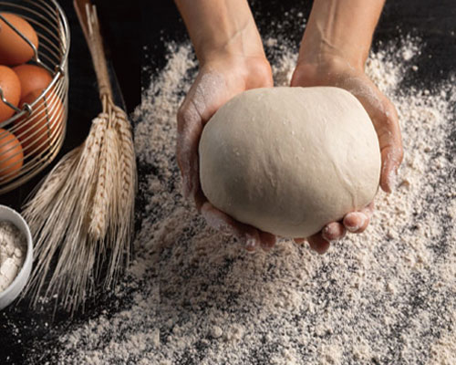
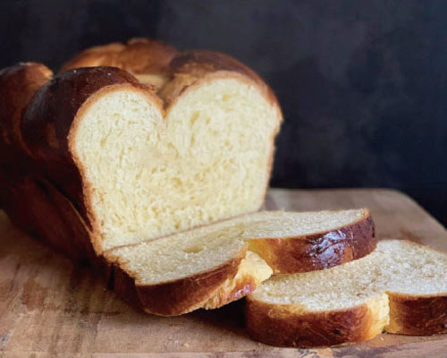
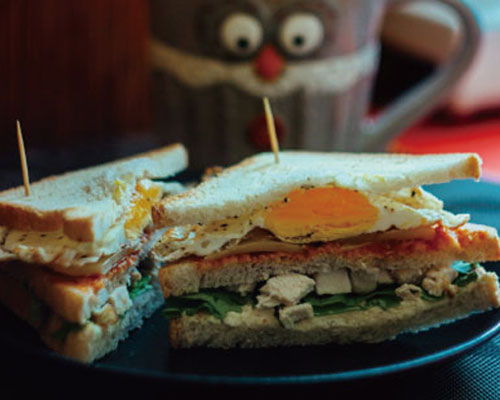

COCOLOとは
焼きたてのパンで幸せな一日を
COCOLOは、イタリア語の “coccolare（コッコラーレ）＝”寄り添う” という言葉と、
日本語の「こころ」を重ねて名づけられた小さなベーカリーカフェです。
素材へのこだわり
COCOLOではお客様に安心・安全なパンをお届けするため、
天然酵母を使用することで添加物を使用せず自然由来のおいしさを追求しています。
また町田で生産された新鮮な素材を積極的に取り入れています。

焼きたてのぬくもりを
焼きたてパンの香ばしさと温かさを大切にし、
お客様に幸せを感じていただけるよう努めております。
季節の旬を取り入れた季節限定のパンもご用意しています。

誰もが気軽に立ち寄れる店
当店は簡易な店内イートインスペースを設けており、ゆったりと過ごせます。
またベビーカー・車椅子のお客様も安心してご利用いただけるよう、入り口や通路幅に工夫をしています。
私たちのパンが素材・香り・温度に“ぬくもり”を感じられるよう、日々パンと向き合います。
